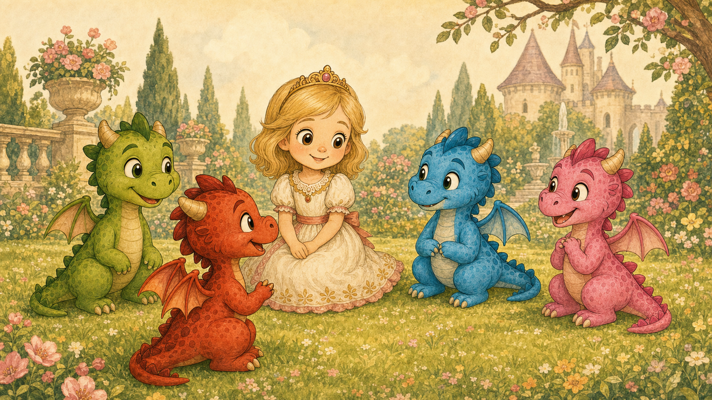

Rozprávka 4
Ako sa Lada konečne skamarátila s dráčikmi

V kráľovskom paláci bolo v ten deň všetko presne také, ako býva v palácoch, keď sa dospelí rozhodnú, že budú veľmi dôležití.
Kráľ sedel v trónnej sále a rozhodoval, či má pekár právo piecť rožky v tvare podkovy, keď kováč tvrdí, že mu tým kazí remeslo.
Kráľovná mala audiencie. To znamenalo, že sedela v krásnych šatách, pila čaj a počúvala ľudí, ktorí rozprávali tak dlho, že aj čaj vychladol od nudy.
Traja princovia boli na love. Aspoň tak to ráno povedali. V skutočnosti sa pokojne mohlo stať, že nelovili oni, ale niečo lovilo ich. Pri princoch sa to nikdy nedalo vedieť dopredu.
A Lada sa nudila.
Najprv premiestnila bábiky v komnate podľa výšky.
Potom podľa farby šiat.
Potom podľa toho, ktorá vyzerala, že by najradšej zjedla koláč.
Potom podľa toho, ktorá sa tvárila najviac urazene.
Nakoniec ich všetky položila na posteľ a povedala:
„Vy sa aspoň nehýbete. To je vaša výhoda aj problém.“
Bábiky neodpovedali. Bábiky bývajú v tomto veľmi tvrdohlavé.
Lada si povzdychla a vyšla do kráľovskej záhrady.
Tam bolo krásne. Kvety kvitli, fontány zurčali a živý plot rástol tak rýchlo, že záhradný elf za ním pobehoval s nožničkami a vyzeral, akoby bojoval s veľmi zeleným nepriateľom. V labyrinte piadidetičky pišťali od radosti lebo jedno z nich našlo slimáka, ktorý podľa nich určite niečo tajil.
Lada však nemala náladu na schovávačku.
Prešla popri mäsožravých lianách za sklom.
„Dobrý deň,“ pozdravila sa slušne.
Jedna liana sa pohla.
„Nie,“ povedala Lada. „Dnes nie.“
Liana sa tvárila, že len cvičí.
Lada pokračovala až za labyrint, na lúku pri skale, ktorá vyzerala ako trojhlavý troll s batohom skamenených zemiakov. Pri skale si potichu čľapkalo jazierko a v ňom žila zlatá rybka na dôchodku.
„Ahoj,“ povedala Lada a prisypala do vody odrobinky.
Zlatá rybka sa vynorila tak rýchlo, ako sa dôchodkyňa zjaví, keď počuje slovo koláč.
„Laduška!“ zvolala. „Práve som ti chcela rozprávať môj príbeh o kaprovi, ktorý tvrdil, že je veľryba.“
„Ten poznám,“ povedala Lada.
„Tak o stratenom háčiku.“
„Aj ten.“
„O kýchaní v rybníku?“
„Aj ten.“
Rybka sa zamyslela.
„A čo štvrtý?“
„Ten nepoznáš celý ani ty,“ zasmiala sa Lada.
„Pravda,“ priznala rybka. „Ale mám rada začiatok.“
Lada si sadla k jazierku a oprela si bradu o kolená.
„Ja by som chcela za hradby,“ povedala potichu. „Do lesa. K hore. Ku dráčikom.“
Zlatá rybka sa nervózne zavrtela, až to čľuplo.
„Za hradbami je svet. Svet je krásny, ale má zuby, je blatistý a občas tam blúdia ľudia, ktorí ani nevedia, kam idú.“
„Aj tak,“ povedala Lada.
Vtom sa ozvalo:
„Za hradbami je aj magický svet.“
Lada sa obzrela.
Na lúke stál jednorožec.
Bol biely, štíhly, lesklý a presne taký krásny, ako si jednorožce myslia, že sú. Hriva mu padala na krk v strieborných vlnách. Roh sa mu trblietal, hoci nebolo celkom jasné, či od mágie, alebo preto, že si ho práve vyleštil.
Zlatá rybka prevrátila oči.
„Ach. Ty.“
„Drahá rybka,“ povedal jednorožec a elegantne sa uklonil, pričom sám seba fascinovane obdivoval v jazierku. „Prišiel som sa porozprávať.“
„So mnou?“
„Samozrejme.“
„Minule si trištvrte hodiny rozprával o svojom chvoste.“
„Je to dobrý chvost.“
Jednorožec sa otočil bokom, aby ho bolo lepšie vidieť.
„Že je krásny?“
Lada naňho hľadela s otvorenými ústami.
„Ty si skutočný jednorožec.“
Jednorožec sa usmial.
„Áno. A veľmi vydarený.“
Zlatá rybka potichu vyfúkla bublinu.
„Ja som Lada,“ povedala Lada.
„Princezná Lada,“ doplnil jednorožec. „Viem. Vidno to podľa šiat, postoja a toho, že sa nudíš vznešenejšie než obyčajné deti.“
„Ja sa nenudím vznešene,“ namietla Lada. „Ja sa nudím úplne obyčajne.“
„Potom je to vážne,“ povedal jednorožec.
Lada sa naklonila dopredu.
„Ty poznáš magický svet?“
Jednorožec zdvihol hlavu.
„Dieťa, ja SOM magický svet.“
Zlatá rybka zakašľala. Na rybu to bol výkon.
Jednorožec ju ignoroval.
„Poznám lesné chodníky, čistinky, miesta, kde tráva svieti, kde si kvety šepkajú, kde víly tancujú, keď si myslia, že sa nikto nepozerá, a kde prales vonia tak, že aj mach má pocit, že je dôležitý.“
Lade sa rozžiarili oči.
„Ukážeš mi to?“
Zlatá rybka sa hneď ozvala:
„Nie.“
„Samozrejme,“ vyhŕkol jednorožec spolu s ňou.
Obaja sa na seba pozreli.
„Je to ešte len dieťa,“ povedala rybka.
„Ja som jednorožec,“ povedal jednorožec.
„Práve preto sa bojím.“
Jednorožec si načuchral hrivu.
„Som neporaziteľný.“
„Ale ona nie,“ povedala rybka.
Jednorožec sa na chvíľu zarazil. Len na chvíľu. Potom sa rozhodol, že tá myšlienka je príliš nepohodlná, a elegantne ju obišiel.
„Pôjdeme len kúsok,“ povedal.
Lada vyskočila.
„Naozaj?“
„Naozaj. Ukážem ti magický svet za hradbami.“
Zlatá rybka sa rozčľapkala.
„Lada, povedz aspoň mame, kam ideš.“
Lada stuhla.
„Mama má audienciu.“
„Tak kráľovi.“
„Kráľ rieši rožky a podkovy.“
„Tak aspoň niekomu.“
Lada pozrela na palác.
Potom za hradby.
Potom na jednorožca.
„Len kúsok,“ povedala.
To je veta, ktorou sa začalo veľa rozprávkových problémov.
Jednorožec sa uklonil.
„Nasleduj ma.“
A tak Lada nasledovala jednorožca cez záhradu. Prešli popri labyrinte, popri záhradnom elfovi, ktorý práve strihal živý plot a mrmlal si: „Rastieš, rastieš, anciáša tvojho?“ Prešli popri skleníku s lianami, ktoré vyzerali sklamane, že dnes nikto nejde príliš blízko. A potom prišli až k malej bránke v záhradnom múre.
Jednorožec sa dotkol rohom zámky.
Cvak.
Bránka sa otvorila.
„To je kúzlo?“ zašepkala Lada.
„Nie,“ povedal jednorožec. „To je starý zámok. Ale vyzeralo to efektne.“
Za hradbami bol svet väčší.
Najprv išli lúkami. Potom medzi stromami. Potom chodníkom, ktorý sa tváril, že vie, kam vedie, ale Lada mu celkom neverila. Jednorožec kráčal vpredu, hrivu mu nadnášal vietor a každú chvíľu sa obzrel, či ho Lada dostatočne obdivuje.
Lada obdivovala všetko.
Motýle.
Mach.
Stopy v blate.
Koreň, ktorý vyzeral ako spiaca ruka.
List, ktorý mal tvar srdca.
„Toto je úžasné,“ šepla.
„Áno,“ povedal jednorožec. „A ako výborne v tom vyzerám!“
Ako šli hlbšie, obyčajný les sa menil. Stromy boli vyššie, tiene zelenšie a vzduch voňal vlhko a sladko. Niekde v diaľke zakričala opica. Potom druhá. Potom sa ozvalo nahnevané elfské:
„Kto mi hodil šupku na balkón?!“
„Sme v pralese?“ spýtala sa Lada.
„Na jeho okraji,“ povedal jednorožec. „Tam, kde sa svet začína tváriť, že má veľké tajomstvá.“
Pred nimi sa otvorila čistinka.
Bola krásna. Tráva na nej bola mäkká, kvety mali farby, ktoré Lada nevedela pomenovať, a uprostred rástol strom s dutinou, v ktorej svietili malé zlaté mušky.
„To sú víly?“ spýtala sa.
„Nie,“ povedal jednorožec. „Mušky. Ale veľmi sebavedomé.“
Lada sa zasmiala.
A vtedy sa z kríkov ozvalo zapraskanie.
Jednorožec zdvihol hlavu.
„Kto tam?“
Z krovia vyšiel vlk.
Bol sivý, strapatý a mal výraz niekoho, kto cestou zabudol, kam vlastne ide. Chvíľu pozeral na Ladu. Potom na jednorožca. Potom znovu na Ladu.
„Aha,“ povedal vlk.
Lada cúvla.
„Dobrý deň.“
Vlk sa zamyslel.
„Dobrý. Asi.“
Jednorožec sa postavil pred Ladu.
„Odstúp, lesný tvor. Pred tebou stojí jednorožec.“
Vlk prižmúril oči.
„To vidím.“
„Som neporaziteľný.“
„To je pekné,“ povedal vlk. „Ja som hladný.“
Lada chytila jednorožca za hrivu.
„On ma chce zožrať?“
Vlk sa zarazil.
„Chcem?“
Chvíľu rozmýšľal.
„Myslím, že áno. Ale nie som si istý, či teba. Ráno som si povedal, že niekoho zožeriem, len som si nezapísal koho.“
„Tak to môžeš nechať na zajtra,“ navrhla Lada.
Vlk nad tým vážne premýšľal.
Jednorožec však nevedel mlčať.
„Nikdy! Ja ťa ochránim!“
Dramaticky zafŕkal, načuchral hrivu, roh sa mu zablysol a na okamih vyzeral naozaj veľkolepo.
Potom sa z krovia za vlkom ozval ďalší zvuk.
Niečo zašuchotalo.
Možno len vták.
Možno opica.
Možno vietor.
Jednorožec sa obzrel za zvukom.
„Čo to bolo?“
„Neviem,“ povedal vlk a oblizol si labu. „Ale ak je to jedlé, bol som tu prvý.“
Jednorožec zbledol. Teda, on bol biely už predtým, ale teraz bol biely tak, že by sa stratil v múke.
„Ja... ja to strategicky obídem,“ povedal.
„Čo?“ spýtala sa Lada.
Jednorožec spravil elegantný krok dozadu.
Potom ďalší.
Potom sa otočil a zmizol medzi stromami tak rýchlo, že po ňom zostal len trblietavý obláčik a veľmi nepríjemné ticho.
Lada ostala sama.
S vlkom.
Vlk sa na ňu pozrel.
„Tak,“ povedal. „Kde sme to prestali?“
„Pri tom, že si si nebol istý.“
„Áno. Ďakujem.“
Vlk sa posadil a poškriabal sa za uchom.
„Som hladný. Ty si malá. To spolu nejako súvisí.“
Lada cúvala, až narazila chrbtom do stromu.
„Ja som princezná.“
Vlk prikývol.
„Je to chrumkavejšie?“
„Nie!“
„Škoda.“
Vtom sa z lesa ozvalo cing.
Potom druhé cing.
Potom fi-fi-fí.
Potom čľup.
Potom piskľavé:
„Uhlík, nechoď tak rýchlo!“
A na čistinku vtrhli dráčiky.
Najprv Uhlík na červenej Ohnivej Strele, trochu očadený a veľmi odhodlaný.
Za ním Mokroš na modrom Čľupákovi, ktorý prešiel cez mláku tak nadšene, že mláka na chvíľu stratila tvar.
Potom Spievanka na ružovej Pesničke, ktorá pri každom otočení kolies zahrala veselý tón.
A nad nimi Poletucha na Vetromilke, ktorá krátko kĺzala vzduchom a tvárila sa, ide presne tak nízko, ako sľúbila.
Zastali.
Všetci sa pozreli na Ladu.
Potom na vlka.
Potom znovu na Ladu.
„Ty si Lada,“ povedala Poletucha.
Lada otvorila ústa.
„Ty vieš, kto som?“
„Videla som ťa zhora v záhrade,“ povedala Poletucha. „Máš najprinceznovskejšie šaty v okolí.“
Spievanka zoskočila z bicykla.
„A najviac vyzeráš, že potrebuješ pomoc.“
Vlk sa postavil.
„Prepáčte,“ povedal. „Ja som bol práve uprostred... niečoho.“
„Žrania princeznej?“ spýtal sa Uhlík.
„Možno,“ povedal vlk. „Nechcem klamať, keď si nie som istý.“
Uhlíkovi z nozdier vyšiel dym.
„Tak teraz si buď istý, že ju žrať nebudeš.“
Mokroš sa postavil vedľa neho.
„Lebo ak sa priblížiš, oblejeme ťa.“
„A opálime,“ dodal Uhlík.
„A zaspievame ti takú pesničku, že odídeš dobrovoľne,“ povedala Spievanka.
Vlk sa zatváril znepokojene.
„Akú pesničku?“
Spievanka sa nadýchla.
Vlk okamžite cúvol.
„Dobre, dobre! Nemusíte hneď používať najsilnejšie zbrane.“
Poletucha zletela nižšie a pristála medzi Ladou a vlkom.
„Choď domov.“
Vlk sa poobzeral.
„Ktorým smerom?“
Dráčiky ukázali každý inam.
Vlk si vybral smer, ktorý neukázal nikto.
„Výborne,“ povedal. „Presne tam som chcel ísť.“
A odbehol do lesa.
Po chvíli sa ešte ozvalo:
„Ak si spomeniem, koho som chcel zožrať, poviem vám!“
„Choď už!“ zakričal Uhlík.
Nastalo ticho.
Lada sa roztriasla.
Až teraz. Dovtedy sa bála tak veľmi, že na trasenie nemala čas.
Spievanka k nej prišla a opatrne jej položila labku na ruku.
„Už je preč.“
Lada prikývla.
„Ja... ja som chcela len vidieť magický svet.“
Mokroš sa pozrel na miesto, kde zmizol jednorožec.
„A kto ťa sem doviedol?“
„Jednorožec.“
Uhlík odfrkol.
„Ten samoľúby?“
Poletucha prikývla.
„Videla som ho minule pri rieke. Obdivoval sa v hladine tak dlho, že si nevšimol, ako sa ponára do bahna.“
„Sľúbil, že mi ukáže svet,“ povedala Lada. „A potom zmizol.“
Spievanka sa zamračila.
„To sa nerobí.“
„Nie,“ povedala Poletucha. „To sa naozaj nerobí.“
Mokroš sa usmial.
„My ideme k Babe Jage. Chceš ísť s nami?“
Lada naňho pozrela.
„K Babe Jage?“
„Áno,“ povedal Uhlík. „Nesieme jej sušené bylinky od mamy a Spievanka jej chce ukázať niečo, čo vraj nie je výbušné.“
„Nie je,“ povedala Spievanka.
„To hovoríš vždy pred výbuchom,“ povedal Mokroš.
„Tentoraz je to hudobné.“
„To hovoríš tiež.“
Lada sa prvýkrát zasmiala.
„Môžem ísť?“
Poletucha sa pozrela na ostatných.
„Do paláca ťa odnesiem pred večerom,“ povedala. „A budeme na teba dávať pozor.“
„Naozaj?“
„Naozaj,“ povedala Spievanka. „Teraz si s nami.“
A tak Lada šla s dráčikmi.
Nebola na bicykli, lebo žiadny nemala. Spievanka jej ponúkla miesto na nosiči Pesničky, ale Lada mala šaty a Pesnička mala píšťalky, ktoré pri každom drgnutí hrali tak nadšene, že by o nich vedel celý prales. Nakoniec išla pešo medzi Spievankou a Mokrošom, zatiaľ čo dráčiky bicykle tlačili alebo pomaly viezli popri sebe.
Poletucha lietala nízko nad nimi.
Uhlík šiel vpredu a tváril sa ako ochranka. Ochranka je niekto, kto kráča pred vami a vyzerá, že ak sa niečo stane, bude to najprv jeho problém.
„Ty si naozaj princezná?“ spýtala sa Spievanka.
„Áno.“
„A môžeš nosiť korunu každý deň?“
„Môžem, ale je ťažká.“
„A máš vlastnú izbu?“
„Áno.“
Spievanka sa zastavila.
„Celú vlastnú?“
„Áno.“
Spievanka sa pozrela na ostatných dráčikov tak, ako sa pozerá niekto, kto práve zistil, že niekde existuje raj.
„A môžeš si tam dať všetky hračky?“
„Skoro všetky.“
„Skoro všetky je dosť.“
Lada sa zasmiala.
„Ty máš rada hračky?“
„Ja mám rada všetko, s čím sa dá niečo vymyslieť.“
„Ja tiež,“ povedala Lada.
Spievanka zastala.
„Naozaj?“
„Naozaj. Len sa so mnou v paláci skoro nikto nechce hrať. Dospelí majú prácu a princovia sú stále preč.“
Spievanka sa rozžiarila.
„Tak to je výborné.“
„Že sa so mnou nikto nehrá?“
„Nie. Že sa so mnou budeš hrať ty.“
Lada sa usmiala a z očí sa jej vytratili posledné známky vystrašenia.
Cesta do pralesa bola dobrodružná. Videli stromy, ktoré mali korene ako prepletené prsty. Videli kvety, ktoré sa zatvárali, keď okolo prešiel Uhlík, lebo asi cítili teplo a nechceli byť usušené. Videli opice, ktoré sedeli na konároch a šúpali ovocie.
Jedna opica hodila šupku.
Trafila Mokrošovi prilbu.
„Hej!“ zakričal Mokroš.
Zhora sa ozvalo elfské:
„Vidíte?! Robia to aj návštevám!“
Opica sa tvárila nevinne. Tak nevinne, že bolo jasné, že je vinná.
Konečne dorazili na čistinku, kde stála chalúpka Baby Jagy.
Nebola na kuracích nohách, lebo Baba Jaga tvrdila, že také bývanie je nepraktické, najmä keď sa chalúpka rozhodne ísť na prechádzku práve vtedy, keď varíte polievku. Táto chalúpka stála pevne na zemi, len komín sa trochu nakláňal, akoby počúval klebety.
Pred chalúpkou viseli bylinky, sušili sa huby a na plote sedel hrniec, ktorý sa tváril, že tam patrí.
Baba Jaga vyletela spoza stromov na metle.
„Uhniiiií!“ zvrieskla.
Všetci uskočili.
Baba Jaga pristála tak, že metla vyryla v zemi ryhu a zastavila sa tesne pred Uhlíkom.
„Perfektné pristátie,“ povedala.
Poletucha zažiarila.
„Môžeme si dať preteky?“
„Nie,“ povedali Uhlík, Mokroš, Spievanka aj Lada naraz.
Baba Jaga si všimla Ladu.
„A toto je čo?“
„Princezná,“ povedal Mokroš.
„Našli sme ju pri vlkovi,“ dodal Uhlík.
„Vlkovi?“ Baba Jaga si založila ruky vbok. „Ten zábudlivý chlpáč zasa nevie, koho má žrať?“
„Asi,“ povedala Lada.
Baba Jaga si ju prezrela od hlavy po päty.
„No. Na princeznú, čo ju chcel zožrať vlk si celkom celá.“
„Ďakujem,“ povedala Lada, lebo nevedela, čo iné sa na to hovorí.
Vošli dnu.
Chalúpka voňala po bylinkách, dyme, mede, sušených jablkách a niečom, čo sa tvárilo ako liek, ale mohla to byť aj večera. Na poličkách stáli fľaštičky. Niektoré bublali. Jedna si potichu spievala. Druhá mala na sebe nápis: NEPIŤ, IBA AK NAOZAJ, čomu rozumela iba ak Jaga.
Baba Jaga prevzala bylinky od mamy dračice.
„Výborne. Toto potrebujem na masť proti popŕhleniu od urazených žihľiav.“
„Žihľavy sa urážajú?“ spýtala sa Lada.
„Samozrejme,“ povedala Baba Jaga. „Skús na ne stúpiť a uvidíš, ako osobne to berú.“
Spievanka vytiahla zo svojho batôžka malú vecičku z drôtikov, gombíkov a kúsku ružového skla.
„A toto som ti chcela ukázať.“
Baba Jaga prižmúrila oči.
„Vybuchuje to?“
„Nie.“
„Spieva to?“
„Áno.“
„Potom to môže vybuchnúť hudobne.“
Spievanka zatočila kľúčikom. Vecička začala cinkať a hrať tenkú melódiu.
Lada sa usmiala.
„To je krásne.“
Spievanka sa na ňu pozrela.
„Páči sa ti?“
„Veľmi.“
Spievanka sa zatvárila tak šťastne a opadli z nej všetky drobné klamstvá, ktoré si pripravila pre prípad, že sa vecička rozpadne.
Nerozpadla sa.
Baba Jaga im dala malinový čaj, medové placky a každému jednu radu. Babine Jagine rady boli zvláštne, lebo zneli múdro aj podozrivo naraz.
Uhlíkovi povedala:
„Keď chceš páliť, najprv sa pozri, či niekto práve nesuší ponožky.“
Mokrošovi:
„Voda si nájde cestu, ale nie vždy tú, ktorú si jej vytýčil.“
Poletuche:
„Kto lieta príliš vysoko, dovidí síce ďaleko, ale nevidí si vlastný nos.“
Spievanke:
„Keď niečo rozoberieš, aspoň sa tvár, že to vieš zložiť.“
A Lade povedala:
„Keď ti niekto sľúbi magický svet, spýtaj sa, či pozná cestu späť.“
Lada prikývla.
„Nabudúce sa už spýtam.“
Keď sa začalo stmievať, dráčiky vedeli, že musia Ladu vrátiť domov.
Lada zosmutnela.
„Ja nechcem, aby to skončilo.“
Spievanka sa k nej pritúlila.
„Neskončí.“
Potom sa prehrabala vo svojom malom batôžku a vytiahla oblý ruženín. Bol hladký, ružový a vnútri sa mu mihotalo jemné svetielko.
„Toto mám od maminky,“ povedala. „Je z nášho pokladu. Vraj je v ňom trošku dospelej dračej mágie, takže ho nemám používať na hlúposti.“
„A čo robí?“ spýtala sa Lada.
„Keď budeš naozaj potrebovať pomoc,“ povedala Spievanka vážne, „pošúchaj ho. Nie keď sa budeš nudiť. Ani keď budeš chcieť koláč. A už vôbec nie keď budeš chcieť, aby niekto za teba upratal bábiky. Iba keď to budeš fakt potrebovať. A ja sa k tebe premiestnim.“
Lada ho vzala do dlaní.
„Naozaj?“
„Naozaj,“ povedala Spievanka. „Ale ak budem práve držať niečo rozobraté, možno prídem aj s tým.“
Lada sa zasmiala a potom Spievanku objala.
„Ďakujem.“
Spievanka najprv stuhla, lebo ju objatie prekvapilo. Potom objala Ladu späť.
„Ty sa vieš najlepšie hrať,“ povedala potichu.
„Veď sme sa ešte poriadne nehrali.“
„Viem. Ale už to vidím.“
Poletucha si kľakla.
„Poď. Odnesiem ťa.“
Lada sa opatrne chytila Poletuchy okolo krku. Poletucha roztiahla krídla.
„Nebudeš letieť príliš vysoko?“ spýtala sa Lada.
Poletucha sa pozrela na zapadajúce slnko, na stromy, na diaľku, ktorá ju lákala.
Potom na Ladu.
„Nie,“ povedala. „Dnes nie.“
A vzlietla.
Leteli ponad prales, ponad hlboký les, ponad rieku, ponad lúky a nakoniec ponad mestské hradby. Lada videla kráľovstvo zhora. Palác svietil oknami. Záhrada vyzerala ako vyšívaná deka. Jazierko bolo malá tmavá bodka a pri ňom sa niečo zlatisto mihlo.
Asi rybka.
Poletucha pristála na balkóne Ladinej komnaty tak jemne, že sa nepohla ani záclona.
„Ďakujem,“ zašepkala Lada.
„Zajtra sa tvár, že si nikde nebola,“ povedala Poletucha.
Vtom sa otvorili dvere.
Stála v nich kráľovná.
Lada zbledla.
Poletucha stuhla.
Kráľovná sa pozrela na Ladu.
Potom na Poletuchu.
Potom na Ladine zablatené topánky.
Potom na ruženín v jej ruke.
„Lada,“ povedala pomaly, „kde si bola?“
Lada sa nadýchla.
Mohla povedať veľa vecí. Mohla si vymyslieť, že bola v záhrade. Mohla povedať, že spadla do kríka. Mohla tvrdiť, že blato prišlo za ňou.
Ale namiesto toho povedala pravdu.
„Za hradbami. Jednorožec ma zobral do lesa, potom ma nechal pri vlkovi, ale dráčiky ma zachránili a boli sme u Baby Jagy a Spievanka mi dala ruženín a Poletucha ma priniesla domov.“
Kráľovná chvíľu mlčala.
Poletucha sa pripravila na všetko. Aj na krik. Aj na stráže. Aj na zákaz lietania, ktorý by bol síce ťažko vymáhateľný, ale nepríjemný.
Kráľovná však neurobila nič z toho.
Len si sadla na posteľ.
„Poď sem,“ povedala Lade.
Lada prišla.
Kráľovná ju objala.
„Bála som sa,“ povedala ticho.
„Prepáč,“ zašepkala Lada.
„A nabudúce,“ povedala kráľovná, „mi to povieš skôr, než pôjdeš do lesa s niekým, kto má príliš peknú hrivu na to, aby mal rozum.“
Poletucha sa snažila nezasmiať.
Kráľovná sa na ňu pozrela.
„Ďakujem, že si ju priniesla domov.“
Poletucha prikývla.
„Bola statočná.“
Lada sa usmiala.
Kráľovná pohladila dcéru po vlasoch.
„Zajtra mi porozprávaš všetko od začiatku. Dnes zostanem chvíľu pri tebe.“
Lade sa splnil ďalší sen, o ktorom ani nevedela, že ho má.
Mama si na ňu našla čas.
Poletucha odletela späť k hore, kde už dráčiky rozprávali svojej mame všetko naraz.
„Bol tam vlk!“ hovoril Uhlík.
„A Lada sa nebála, už potom ako sme prišli!“ povedal Mokroš.
„A Baba Jaga mala fľaštičku, čo spievala!“ dodala Spievanka.
„A jednorožec zdrhol,“ dokončila Poletucha, keď pristála.
Mama dračica počúvala. Najprv jedným okom. Potom oboma.
Keď dopočúvala, dlho mlčala.
„Takže,“ povedala napokon, „zachránili ste princeznú.“
Dráčiky prikývli.
„Skamarátili ste sa s ňou.“
Prikývli ešte viac.
„A dali ste jej čarovný ruženín z môjho pokladu.“
Spievanka sklopila uši.
„Len jeden.“
Mama dračica sa na ňu chvíľu pozerala.
Potom si povzdychla.
„No,“ povedala. „Priateliť sa s princeznami môže byť celkom výhodné.“
Dráčiky sa na ňu pozreli.
„Výhodné?“ spýtal sa Uhlík.
Mama dračica si položila hlavu na poklad.
„Len tak. Keby dačo.“
A zavrela oči.
Na druhý deň ráno Lada vstala skôr než obyčajne. Na nočnom stolíku ležal ruženín a v jeho vnútri sa jemne mihotalo ružové svetielko.
Lada ho pohladila prstom.
Nepošúchala ho.
Nepotrebovala pomoc.
Len sa usmiala.
Za hradbami, ďaleko na hore, Spievanka práve vysvetľovala ostatným, že princezná je najlepší kamarát na hranie, lebo má vlastnú izbu, veľa bábik a nebojí sa ani vlka.
A niekde v lese stál jednorožec pri potoku a obdivoval svoj odraz.
„Nebol to útek,“ povedal sám sebe. „Bolo to taktické premiestnenie krásy.“
Potok mu na to nič nepovedal.
Ale zlatá rybka by určite mala nevrlú poznámku.